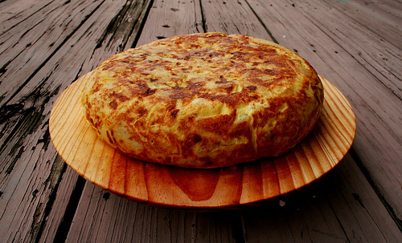

De patatas (Tortilla española)
La tortilla de patatas es uno de los platos más tradicionales y queridos de España. Se prepara friendo lentamente las patatas (y a veces cebolla) en aceite de oliva, luego se mezclan con huevos batidos y se cuajan en una sartén hasta formar una tortilla gruesa y dorada. Cada familia tiene su forma favorita de hacerla: con cebolla ("con cebolla") o sin ella ("sin cebolla"), más o menos cuajada, más fina o más alta.
Esta receta es ideal tanto para una comida principal como para una tapa. Puede servirse caliente, templada o incluso fría, lo que la convierte en una opción versátil y perfecta para llevar a picnics o reuniones. Su sabor suave y su textura cremosa hacen que guste a personas de todas las edades.
Pela las patatas y córtalas en rodajas finas o en trozos pequeños (según prefieras la textura).
En una sartén grande, pon abundante aceite de oliva. Cuando esté caliente, añade las patatas y fríelas a fuego medio-bajo hasta que estén blandas (no crujientes). Remueve de vez en cuando.
Si te gusta con cebolla, pícala en tiras finas y añádela a la sartén junto con las patatas para que se fría a la vez.
En un bol grande, bate los huevos con una pizca de sal
.Añade las patatas (y cebolla) al bol con los huevos batidos. Remueve todo con cuidado para que se impregnen bien.
Cuando los bordes estén cuajados y el centro casi hecho, pon un plato grande encima de la sartén, dale la vuelta con cuidado, y desliza de nuevo la tortilla a la sartén para cocinar el otro lado.
Cocina unos minutos más, según te guste más jugosa (poco hecha) o más firme (bien cuajada).
Sírvela caliente, templada o incluso fría. ¡Está rica de cualquier forma!